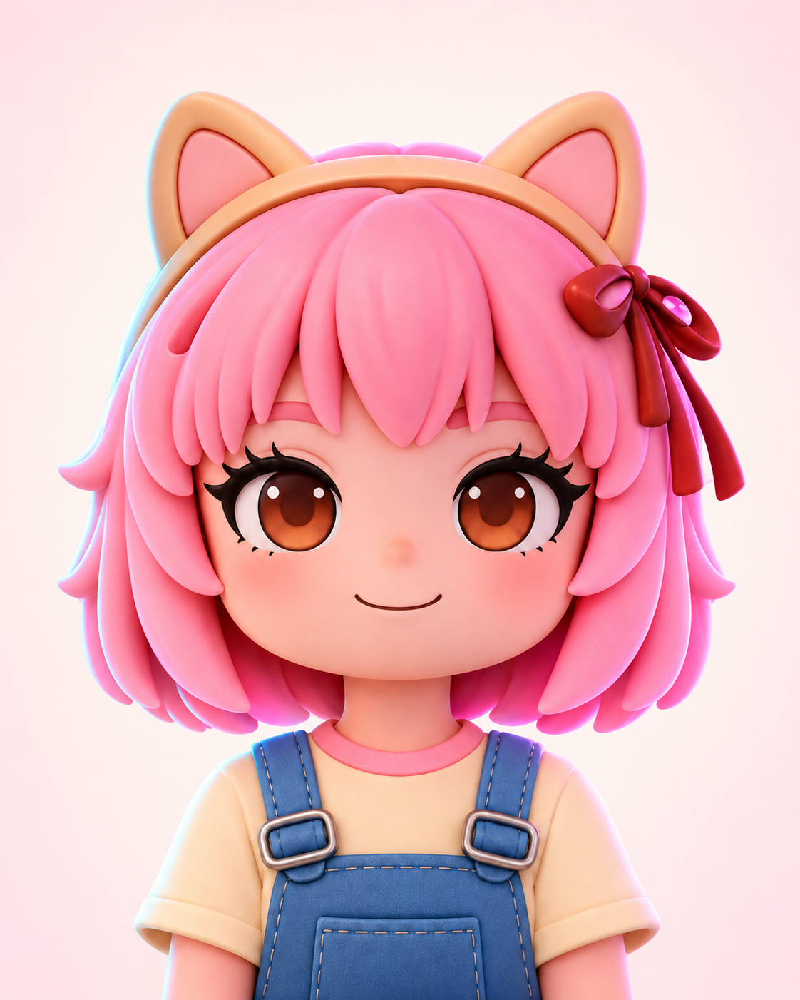
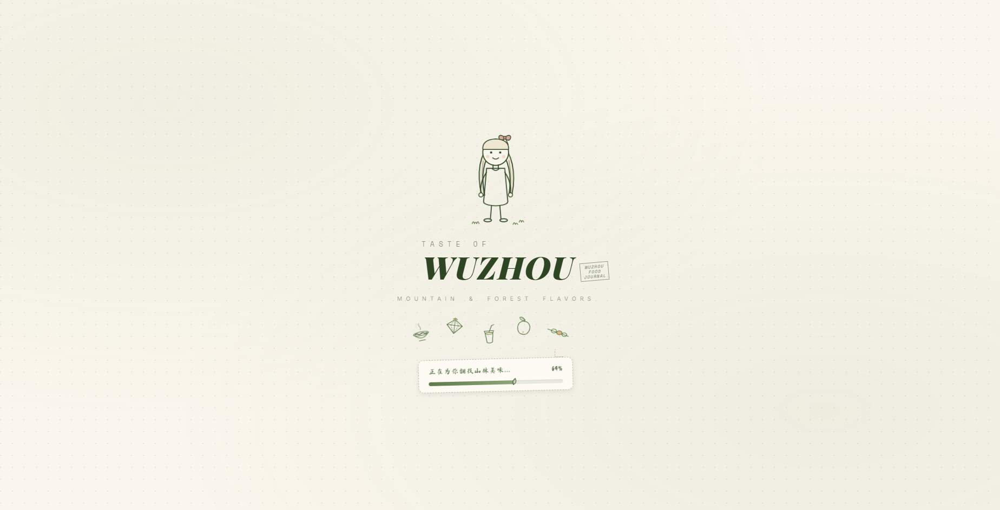
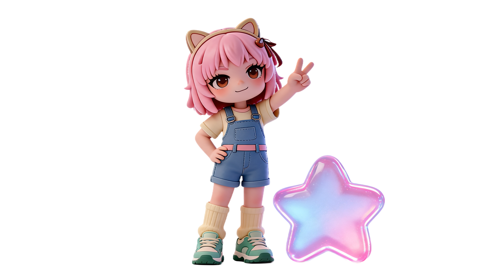

INDEPENDENT DEVELOPER · YLZ
ABOUT ME

01 / FEATURED PROJECT

PROJECT INTRODUCTION
这是一个无需商家入驻、专注真实美食探索的网站，以轻松直观的方式记录梧州街头值得被发现的味道。

PRIVATE PROJECT MANAGER
文件选择框刷新后显示“未选择文件”是浏览器的安全规则，请以下方“已保存”缩略图为准。图片会缩小后保存在当前浏览器，清除浏览器数据后会恢复默认内容。
ABOUT ME CONTENT
资料卡 01–02 显示在第一页，03–04 显示在第二页，05–06 显示在第三页。